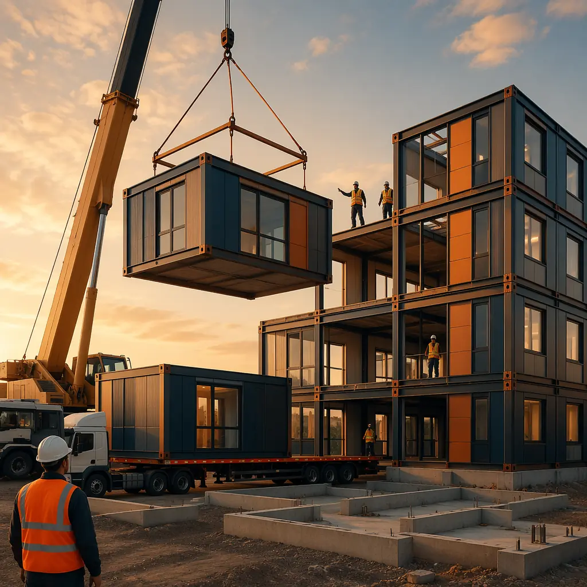
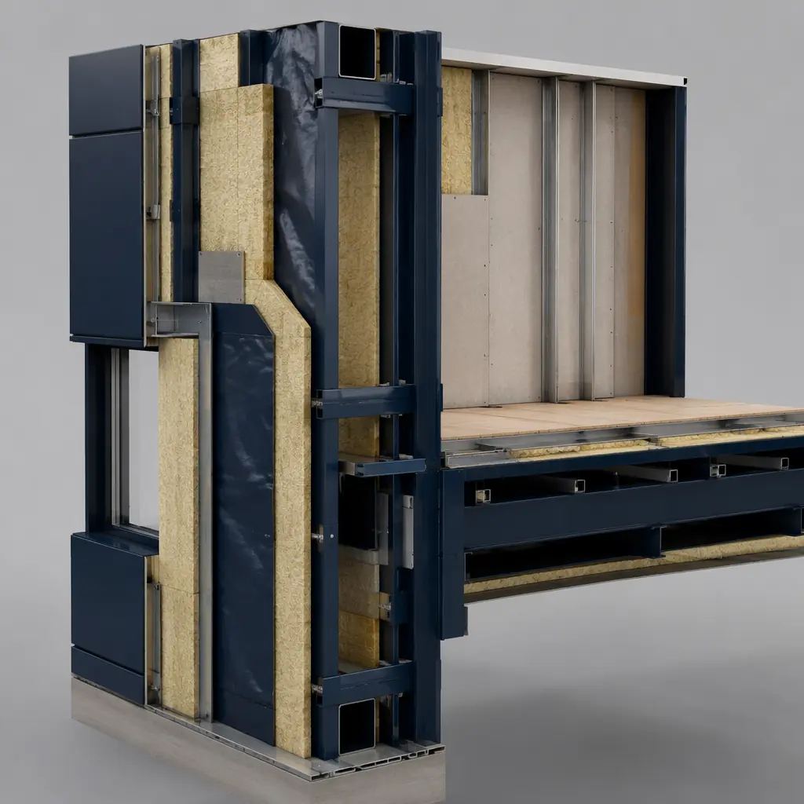
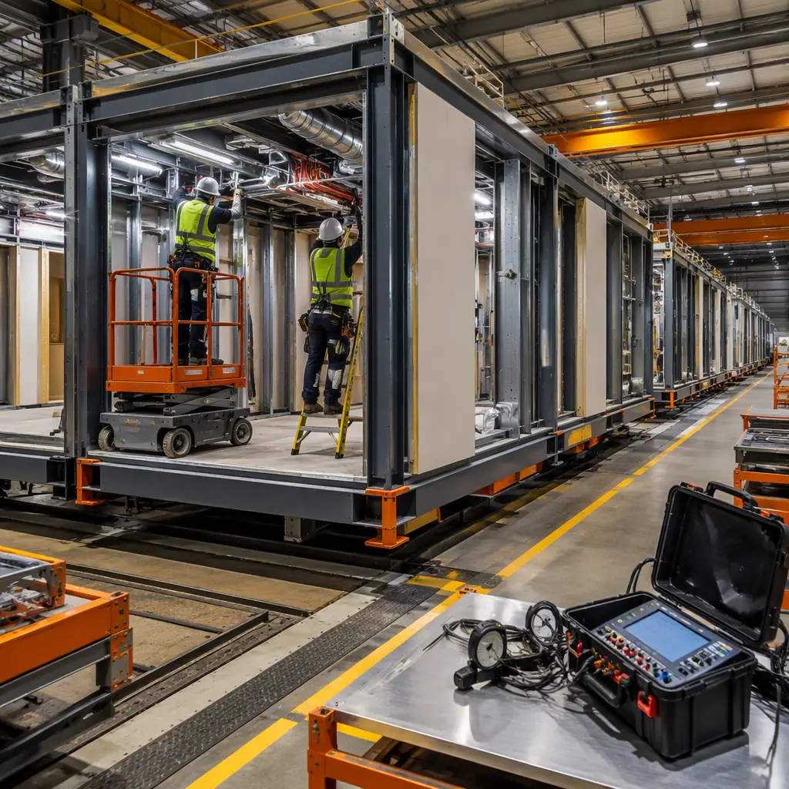
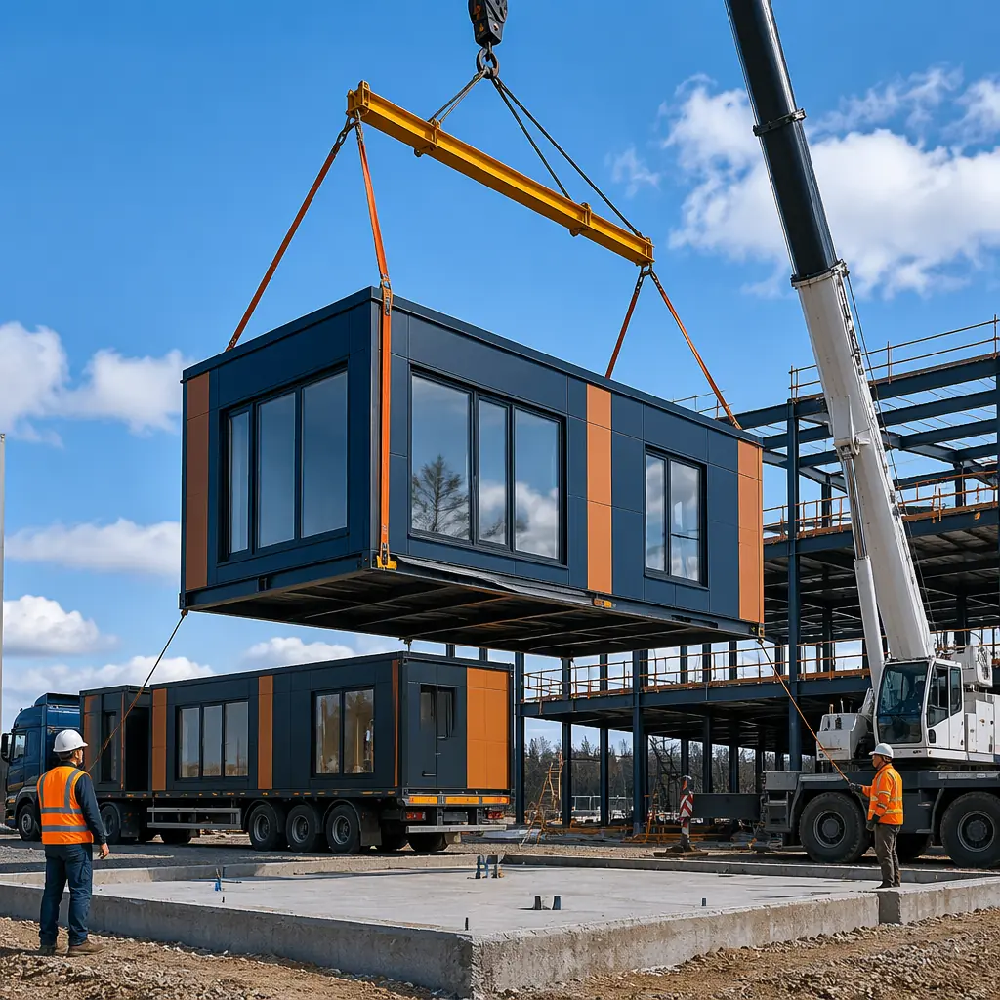

When developers evaluate construction methods, the conversation nearly always starts with upfront cost per square foot. But buildings live for decades, and the true cost of ownership unfolds over 30, 40, or 50 years. For commercial property owners, facility managers, and institutional investors, lifecycle costs — maintenance, energy, component replacement, and eventual decommissioning — typically exceed initial construction costs by a factor of 3 to 5. Modular construction doesn't just compete on day-one cost (see our 2026 cost per square foot guide); it fundamentally reshapes the lifecycle cost curve. This analysis examines how factory-built modules deliver 18–25% lower total cost of ownership over a 50-year building life.

Where Building Costs Actually Go: Upfront vs. Lifetime
Industry data from the National Institute of Building Sciences (NIBS) and RICS tells a consistent story: initial construction represents only 20–25% of a commercial building's total 50-year cost. The rest breaks down into operations (40–45%), maintenance and replacements (20–25%), and financing (10–15%). Modular construction impacts every category beyond the initial build.
| Cost Category | Traditional (% of 50yr TCO) | Modular (% of 50yr TCO) | Modular Saving |
|---|---|---|---|
| Initial construction | 22% | 19% | 3% |
| Energy & operations | 42% | 33% | 9% |
| Maintenance & replacement | 23% | 17% | 6% |
| Financing | 13% | 11% | 2% |
| 50-Year TCO (per sq ft) | $480–$620 | $360–$510 | 18–25% |
The largest savings come from energy performance and reduced maintenance frequency — two areas where factory precision creates compounding advantages over decades. For developers evaluating the business case, our ROI developer's guide walks through the upfront math; here we focus on what happens after the certificate of occupancy.

Energy Performance: The Compounding Advantage
Modular buildings consistently outperform site-built equivalents on energy consumption, and the gap widens over time. Three structural factors drive this:
Factory-sealed envelope integrity. Air leakage accounts for 25–40% of heating and cooling energy loss in conventional buildings, primarily through gaps at wall-to-floor and wall-to-ceiling junctions. In a factory setting, modules are assembled on precision jigs in climate-controlled conditions. Joints are sealed under quality-controlled protocols, and every module undergoes blower-door testing before leaving the factory floor. MODURA modules consistently achieve 1.5–2.5 ACH50 (air changes per hour at 50 Pascals), compared to 5–10 ACH50 for conventional commercial construction. Over 30 years, that gap translates to approximately $8–14 per square foot in cumulative energy savings.
Continuous insulation without thermal bridges. Site-built walls have thermal bridges at every stud — the wood or steel framing member conducts heat directly through the insulation layer. Factory-built modules use advanced framing with staggered studs and continuous exterior insulation (see our deep dive on modular energy efficiency), reducing thermal bridging by 60–70%. The effective R-value of a modular wall assembly is typically R-28 to R-34, versus R-19 to R-24 for conventional 2×6 construction with batt insulation.
Commissioned HVAC systems. In a modular factory, HVAC equipment is installed, ducted, charged, and tested before the module ships. Site-built HVAC commissioning is notoriously inconsistent — the US Department of Energy estimates that 50–70% of commercial rooftop units have at least one commissioning fault (incorrect refrigerant charge, improper airflow, failed economizers) that increases energy consumption by 10–30%. Factory commissioning eliminates this variability. Every MODURA module's mechanical systems are verified to design specifications before transport.

Maintenance Frequency: Why Factory Precision Means Fewer Callbacks
Building maintenance costs follow a predictable pattern: the first 5–10 years are relatively quiet, then the curve steepens as systems age and original construction defects surface. Modular construction shifts this curve rightward by reducing the defect density at handover.
Weather-exposed construction eliminated. Site-built structures spend months exposed to rain, freeze-thaw cycles, and UV radiation before the building envelope is closed. Moisture intrusion during construction is the root cause of many long-term durability problems: rusted steel connectors, mold in wall cavities, delaminating sheathing. Modular modules are built indoors and wrapped for transport. The structural frame, insulation, and interior finishes never see weather until the building is weathertight. In MODURA's 500+ projects across 18 countries, weather-related defect claims during the warranty period run at less than 0.3% of module count — approximately one-tenth the industry average for site-built projects.
Standardized components reduce long-term maintenance complexity. When every hotel room module uses identical plumbing riser assemblies across 200 units, maintenance staff can stock a handful of replacement parts instead of managing inventory for 200 unique assemblies. The same logic applies to electrical panels, window units, and door hardware. For multi-family developers, this standardization reduces maintenance labor costs by an estimated 15–20% annually, based on property management data from modular apartment operators.
Component Replacement Cycles: What Gets Replaced When
Every building system has a finite service life. The comparison below shows replacement intervals for major components in modular vs. conventional construction:
| Component | Conventional Life (yrs) | Modular Life (yrs) | Reason for Difference |
|---|---|---|---|
| Roof membrane | 20–25 | 25–30 | Factory-installed, no weather exposure during installation |
| Windows | 25–30 | 30–35 | Precision-framed openings, no racking stress |
| HVAC equipment | 15–20 | 18–22 | Commissioned at factory, correct charge from day 1 |
| Plumbing fixtures | 15–20 | 20–25 | Pressure-tested in factory, vibration-free transport |
| Exterior cladding | 30–40 | 35–45 | Factory-applied, weatherproofed before transport |
| Electrical systems | 30–40 | 35–45 | Pre-tested circuits, harness-routed, no drywall retrofits |
The extended service life is not speculative. For a deep dive into how modular construction meets the most demanding durability standards, see our guide to fire-rated assemblies and passive protection in modular buildings.

Financing Impact: Lower Risk, Better Terms
Construction lenders price risk into every loan. Faster construction means shorter interest carry periods and earlier revenue generation. A modular apartment building that opens 12 months sooner than a site-built equivalent generates roughly $240,000 in additional rental income per 100 units (at $2,000/month average rent) simply by compressing the timeline. This revenue acceleration, combined with the reduced construction defect risk documented above, has led a growing number of lenders to offer preferential terms for modular projects.
Key financing advantages: shorter construction loan duration reduces total interest cost by 20–30%; factory quality control reduces completion risk premiums; and standardized component warranties from factory-tested systems satisfy lender due diligence requirements more efficiently. For a comprehensive treatment of modular project financing structures, see our financing and funding models guide and our insurance and risk management analysis.
Sustainability Credits and Lifecycle Carbon
Lifecycle cost and lifecycle carbon are increasingly linked by regulation. The EU's Energy Performance of Buildings Directive (EPBD) now requires whole-life carbon assessment for large commercial projects, and similar mandates are advancing in California, New York, and British Columbia. Modular construction generates 30–45% less construction waste than site-built methods (factory cut optimization + material recycling programs) and uses 15–20% less total material by eliminating weather protection, site storage losses, and rework. For developers pursuing green building certifications, our LEED certification guide for modular projects and embodied carbon analysis detail how these savings translate to certification points.
The Bottom Line: What a Developer Should Expect
For a typical 50,000 sq ft commercial building, the modular lifecycle advantage translates to cumulative savings of $6–12 million over 50 years compared to conventional construction. The savings break down roughly as: 40% from energy efficiency, 30% from reduced maintenance and longer component life, 20% from financing savings, and 10% from lower initial construction cost. These aren't speculative projections — they're consistent patterns observed across MODURA's 500+ completed projects in 18 countries.